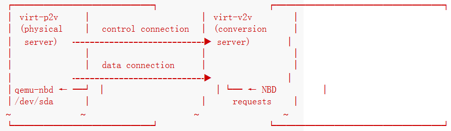

原文地址：virt-p2v
不要直接运行virt-p2v。你应该使用可启动CDROM,ISO,PXE image来启动物理机。这个映像包括virt-p2v二进制文件，并会自动地运行它。这么做的原因是被磁盘必须是非活动状态，因为其他程序会修改活动磁盘的内容。这个启动映像由virt-p2v-make-disk制作。
1.网络设置
virt-p2v在物理机上面运行。它通过SSH与转换服务器（安装了virt-v2v）通信。

virt-v2v执行真正的转换。
SSH连接总是从物理机发起。设置免密登录。
virt-p2v需要SSH的反向端口转发功能ssh -R，必须在转换服务器开启此功能。
SSH的scp功能也必须开启。
转换的速度很大程度上取决于两者的网络情况。
2.GUI交互式配置
启动映像时，会有一些配置。
2.1 SSH配置
2.2 磁盘和网络配置
配置虚拟机的参数，virt-v2v的选项，要转换的硬盘，可移动媒体（CD...），要在虚拟机上创建的网络接口
2.3 转换运行界面
转换完成之后，关闭物理机，不要重启。
3. 内核命令行配置
如果你不想通过图形界面配置，可使用此方法。
在哪里设置命令行参数取决于PXE实现，但是对于pxelinux可以在pxelinux.cfg文件中扩展APPEND字段。比如：
DEFAULT p2v
TIMEOUT 20
PROMPT 0
LABEL p2v
KERNEL vmlinuz0
APPEND initrd=initrd0.img [....] p2v.server=conv.example.com p2v.password=secret p2v.o=libvirt
下面是所有的命令行参数：
KERNEL COMMAND LINE CONFIGURATION
4.SSH认证
比密码方式更安全的是SSH认证。
创建无密码的ssh密钥对，将公钥放在转换服务器的authorized_keys中。

5.工作方式
首先建立一个或多个SSH连接来查询远程virt-v2v的版本及其功能。测试连接在转换开始前会被关闭。
virt-p2v准备好转换时，会打开一个SSH控制连接，首先发送一个创建文件夹的命令在转换服务器上创建临时文件夹。格式：/tmp/virt-p2v-YYYYMMDD-XXXXXXXX。
其下有如下内容：
dmesg
lscpu
lspci
lsscsi
lsusb
(before conversion)
物理机上的对应指令输出（即dmesg(1)，lscpu(1)）。
dmesg输出用于检查错误。其它的输出用于调试新硬件配置。
environment
(before conversion)
virt-v2v的运行环境
name
(before conversion)
物理机的主机名
physical.xml
(before conversion)
描述物理机的libvirt XML。通过-i libvirtxml选项传递物理机数据给
virt-v2v。 注意：这不是真正的libvirt XML。
p2v-version
v2v-version
(before conversion)
virt-v2v和virt-p2v的版本
status
(after conversion)
最终的转换后的状态。0代表成功
time
(before conversion)
转换的开始时间
virt-v2v-conversion-log.txt
(during/after conversion)
转换日志。只有
virt-v2v命令的输出。
virt-v2v-wrapper.sh
(before conversion)
运行
virt-v2v时执行的封装脚本。
在真正的转换开始之前，virt-p2v建立一个或多个连接用于数据传输。
当前的传输协议是ssh代理的NBD（Network Block Device）。默认是qemu-nbd（QEMU Disk Network Block Device Server）。
普通情况下每个物理硬盘都有一个ssh连接：

因为使用了ssh的反向端口转发功能，所以实际上NBD请求可以从转换服务器发送到物理机。这样virt-2v可以通过libguestfs可以打开直接读取物理硬盘的nbd连接。
长长的virt-v2v命令被包装在脚本中然后上传到转换服务器。最后一步就是运行这个脚本，然后运行virt-v2v命令。virt-v2v命令引用physical.xml文件，该文件又引用data connection的NBD监听端口。
virt-v2v -v -x --colours -i libvirtxml -o "libvirt" -oa sparse -os "/var/tmp" --root first physical.xml </dev/null
6.使用
先利用virt-p2v-make-disk制作一个运行virt-p2v的启动盘：
virt-p2v-make-disk -v -o /var/tmp/p2v.img centos-7.5 2>&1 | tee virt-p2v.log
因为使用VMware虚拟机模拟物理机，所以需要再将其转换为vmdk格式：
qemu-img convert -f raw p2v.img -O vmdk p2v.vmdk
然后将这个磁盘添加到虚拟机上面，设置开机启动进入固件，调整硬盘的启动顺序，开机时选择第一个linux内核，此时即进入了virt-p2v的启动盘。然后按照提示进行配置即可开始转换。
注意：选择libvirt作为输出格式的时候，os选项填写pool的名字，可通过virsh pool-list查看有哪些pool。